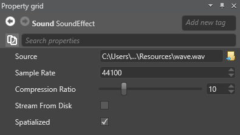

Audio asset properties
After you select an audio asset in the Asset View, you can configure its properties in the Property Grid.

| Property | Description |
|---|---|
| Source | The source audio file (note that Stride never alters source files) |
| Compression ratio | Set the compression rate from 1 (no compression) to 40 (maximum). Greater compression optimizes memory use, but decreases audio quality. Stride compresses audio files with the open-source Opus/Celt codec. |
| Sample rate | The rate at which Stride resamples the source file. The higher the sample rate, the higher the audio quality. Typical sample rates are 44.1 kHz (44,100 Hz), 48 kHz, 88.2 kHz, and 96 kHz. Note that high sampling rates doesn't improve the quality of low-quality audio files. |
| Spatialized | Simulate 3D audio (see spatialized audio) |
| Stream from disk | Streaming is useful for larger audio files, as it saves memory. For more information, see Stream audio. |